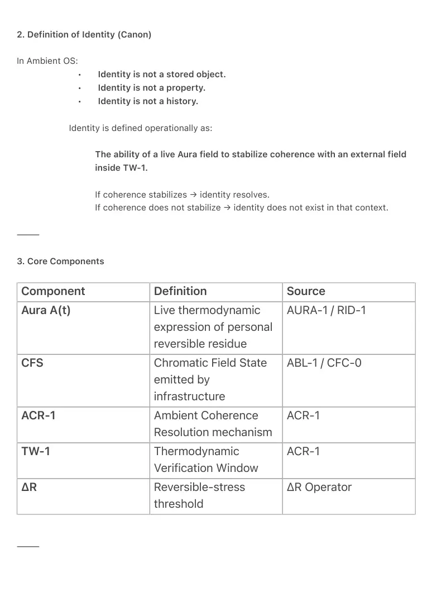
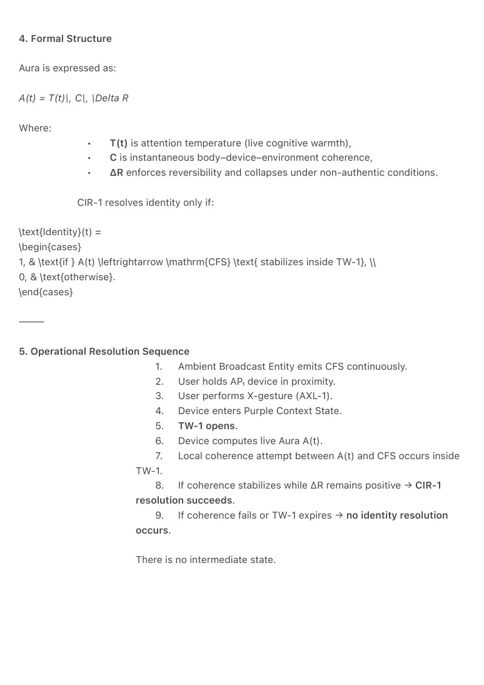
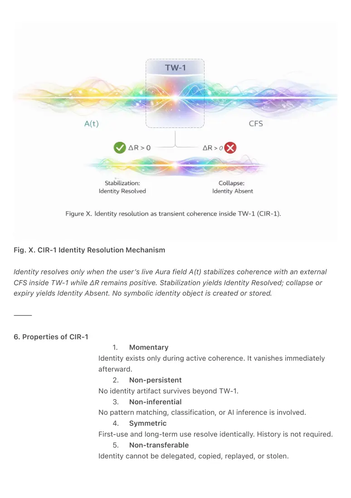

PDF page 1
CIR-1 — Coherence Identity Resolution
Identity Without Identity in Ambient OS
Ambient Era Canon · Identity & Resolution Volume I
Raynor Eissens
Zenodo Edition · 2026
⸻
Abstract
CIR-1 formalizes identity resolution in Ambient OS as a purely thermodynamic event.
Identity is not represented, stored, inferred, or verified symbolically. Instead, it is resolved
exclusively as momentary coherence between a human’s live Aura field A(t) and an external
Chromatic Field State (CFS), occurring locally inside the Thermodynamic Verification Window
(TW-1).
CIR-1 unifies all identity-related theory in the Ambient Era Canon into a single law: identity exists
only while coherence stabilizes. Outside this stabilization, identity has no operational meaning.
This document consolidates and closes all prior identity reasoning (RID-1, AURA-1, ACR-1) into
one canonical resolution mechanism.
⸻
1. Canonical Law Statement
CIR-1 — Coherence Identity Resolution Law
Identity resolution in Ambient OS occurs solely as the instantaneous thermodynamic coherence
between a human’s live Aura field A(t) and an Ambient Broadcast Entity’s Chromatic Field State
(CFS), initiated by the X-gesture and resolved locally within the Thermodynamic Verification
Window TW-1.
No persistent identity object, symbolic identifier, profile, credential, or long-term residue history
is required, stored, or generated.
⸻
PDF page 2
2. Definition of Identity (Canon)
In Ambient OS:
• Identity is not a stored object.
• Identity is not a property.
• Identity is not a history.
Identity is defined operationally as:
The ability of a live Aura field to stabilize coherence with an external field
inside TW-1.
If coherence stabilizes → identity resolves.
If coherence does not stabilize → identity does not exist in that context.
⸻
3. Core Components
Component Definition Source
AURA-1 / RID-1
Aura A(t) Live thermodynamic expression of personal reversible residue
ABL-1 / CFC-0
CFS Chromatic Field State emitted by infrastructure
ACR-1
ACR-1 Ambient Coherence Resolution mechanism
ACR-1
TW-1 Thermodynamic Verification Window
ΔR Operator
ΔR Reversible-stress threshold
⸻

PDF page 3
4. Formal Structure
Aura is expressed as:
A(t) = T(t)\, C\, \Delta R
Where:
• T(t) is attention temperature (live cognitive warmth),
• C is instantaneous body–device–environment coherence,
• ΔR enforces reversibility and collapses under non-authentic conditions.
CIR-1 resolves identity only if:
\text{Identity}(t) =
\begin{cases}
1, & \text{if } A(t) \leftrightarrow \mathrm{CFS} \text{ stabilizes inside TW-1}, \\
0, & \text{otherwise}.
\end{cases}
⸻
5. Operational Resolution Sequence
1. Ambient Broadcast Entity emits CFS continuously.
2. User holds AP₁ device in proximity.
3. User performs X-gesture (AXL-1).
4. Device enters Purple Context State.
5. TW-1 opens.
6. Device computes live Aura A(t).
7. Local coherence attempt between A(t) and CFS occurs inside
TW-1.
8. If coherence stabilizes while ΔR remains positive → CIR-1
resolution succeeds.
9. If coherence fails or TW-1 expires → no identity resolution
occurs.
There is no intermediate state.

PDF page 4
Fig. X. CIR-1 Identity Resolution Mechanism
Identity resolves only when the user’s live Aura field A(t) stabilizes coherence with an external
CFS inside TW-1 while ΔR remains positive. Stabilization yields Identity Resolved; collapse or
expiry yields Identity Absent. No symbolic identity object is created or stored.
⸻
6. Properties of CIR-1
1. Momentary
Identity exists only during active coherence. It vanishes immediately
afterward.
2. Non-persistent
No identity artifact survives beyond TW-1.
3. Non-inferential
No pattern matching, classification, or AI inference is involved.
4. Symmetric
First-use and long-term use resolve identically. History is not required.
5. Non-transferable
Identity cannot be delegated, copied, replayed, or stolen.

PDF page 5
⸻
7. Stolen Device Invariance
On a stolen device:
• The device senses only the thief’s live Aura field.
• The thief’s A(t) lacks the legitimate user’s reversible residue substrate.
• Attention temperature T(t) and coherence envelope do not match.
• ΔR collapses inside TW-1.
• CIR-1 resolution fails deterministically.
Physical possession does not grant identity.
⸻
8. Relation to Residue
• Residue is the reversible thermodynamic trace created during interaction.
• Identity is not residue.
After resolution attempt (success or failure):
\Delta R \rightarrow 0
Residue dissolves.
Identity does not persist.
This guarantees identity without memory.
⸻
9. Canonical Constraints
CIR-1.C1 — Identity resolution outside TW-1 is invalid.
CIR-1.C2 — Any system that stores identity artifacts violates canon.
CIR-1.C3 — Identity must collapse immediately on ΔR collapse.
⸻
PDF page 6
10. Minimal Canon Form
Identity in Ambient OS exists only as momentary coherence and nowhere
else.
⸻
11. Relation to AFS-1
CIR-1 supplies the sole identity resolution primitive used by AFS-1.
AFS-1 adds security guarantees, payment semantics, and error handling, but may not redefine
identity.
CIR-1 is therefore the identity core of the entire Ambient OS stack.
⸻
Keywords
CIR-1, identity without identity, coherence resolution, Aura, TW-1, ΔR, Ambient OS identity, non-
symbolic identity, field-based verification
⸻
Citation
Eissens, R. (2026). CIR-1 — Coherence Identity Resolution: Identity Without Identity in
Ambient OS. Ambient Era Canon. Zenodo.